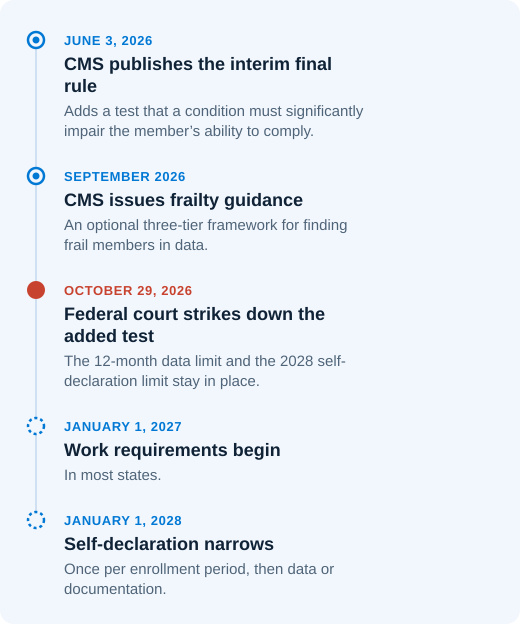

What The October 29 Ruling Changed
A federal court struck down the extra impairment test that CMS had added to the definition, and kept the limits on data and self-declaration.
CMS's June 2026 rule added an extra test on top of the five groups: the member's condition also had to significantly impair their ability to meet the 80-hour monthly requirement. On October 29, 2026, Judge Richard Stearns of the federal court in Massachusetts struck down that added test. He ruled that CMS had exceeded its authority.

- What Still Stands
- The court upheld two limits: states may verify frailty using only the past 12 months of claims and encounter data, and from 2028 members can self-declare only once per enrollment period.
- Extra Time For Some States
- The 25 states and D.C. that brought the case received a six-month pause on federal enforcement of frailty decisions, giving them time to update their systems.
- Still Unsettled
- Reports differ on whether the ruling covers every state or only the 25 states and D.C. that brought the case. CMS hasn't said whether it will appeal. A second case, Taylor v. Kennedy, is pending in Maryland and also challenges the limit on self-declaration.
Tip:
Build the impairment check as a setting your team can switch off, rather than logic written into every rule.